第三部分 连续时间系统变换域分析(下)
本节主要是连续时间系统的复频域分析.
I. Laplace变换 (LT)
- 双边Laplace变换: Fd(s)=∫−∞+∞f(t)e−stdt.
- 其中 s=σ+jω 为复数.
- Laplace反变换(IFT): f(t)=2πj1∫σ−j∞σ+∞Fd(s)estds.
- 单边Laplace变换: 针对有始信号.
- 正变换: F(s)=∫0+∞f(t)e−stdt.
- 反变换: f(t)=[2πj1∫σ−j∞σ+∞Fd(s)estds]ε(t).
- 可以看出, FT是LT中 σ=0 的特殊情况.
II. Laplace变换收敛区
- 收敛区(ROC): 使 f(t)e−σt 满足绝对可积的 σ 取值区间.
- 收敛条件: 收敛区内 σ 满足的条件.
- 单边LT的收敛区: f(t) 分段连续且满足 t→∞limf(t)e−σt=0.
- 一般形式: (σ0,+∞), 或 Re[s]>σ0.
- σ0 称为收敛坐标, Re[s]=σ0 称为收敛边界.
- 双边LT的收敛区:
- 对于右边信号, 收敛区间为 Re[s]>σ0; 对于左边信号, 收敛区间为 Re[s]<σ0.
- 双边信号可以写作左边+右边的形式, 即 f(t)=fL(t)ε(−t)+fR(t)ε(t). 收敛区间为两个信号收敛域的公共部分.
- 容易看出, 一些常见函数, 例如 1,cost,sint , 它们的收敛区间没有重叠, 故双边LT不存在.
- 注意:
- 对于双边LT, F(s) 相同时, 若收敛区间不同, ILT可能得到不同的结果. 故必须给出收敛区才可判断原函数.
- 收敛区内不包含极点.
- 对于有始信号, σ 足够大时, f(t)e−σt 总是存在的.
- 单边LT与FT的关系:
- σ<0: 收敛域包含虚轴, F(jω)=F(s)∣s=jω, 经典FT存在.
- σ=0: 虚轴是收敛边界, 经典FT不存在而广义FT存在. 此时 F(jω)=F(s)∣s=jω
- σ>0: 收敛域不包含虚轴, FT不存在.
III. 常见信号的Laplace变换
注意: 在实际计算, 解题等过程中, 需要写出LT的收敛域.
- 指数类:
- ε(t)↔s1 (Re[s]>0).
- eαtε(t)↔s−α1 (Re[s]>Re[α]).
- cos(ωct)ε(t)↔s2+ωc2s (Re[s]>0).
- sin(ωct)ε(t)↔s2+ωc2ωc (Re[s]>0).
- 幂函数类:
- tε(t)↔s21 (Re[s]>0).
- tnε(t)↔sn+1n! (Re[s]>0).
- 冲激函数: 收敛域均为整个复平面.
- δ(t)↔1.
- δ(n)(t)↔sn.
IV. Laplace变换的基本性质
- 线性性.
- 尺度变换: f(at)↔∣a∣1F(a1s).
- 通过这个性质亦可看出阶跃函数的性质: ε(t)=ε(at).
- 时间平移: f(t−t0)↔F(s)e−st0.
- 对于单边LT, 需要同时平移阶跃函数. 即 f(t−t0)ε(t−t0)↔F(s)e−st0.
- 频率平移: f(t)es0t↔F(s−s0).
- 时域微分: dtdf(t)↔sF(s)−f(0).
- 此性质仅适用于单边LT.
- 推广: dtndnf(t)↔snF(s)−sn−1f(0)−sn−2f′(0)−⋯−f(n−1)(0).
- 注: 这里的 f(0) 通常指 0− (0− 系统). 但 0+ 系统同样存在.
- 时域积分: ∫0tf(τ)dτ↔s1F(s).
- 积分下限为0, 适用于单边信号.
- 引入了极点 s=0, 收敛区间可能变小.
- 频域微积分:
- 微分: tf(t)↔−dsdF(s).
- 积分: tf(t)↔∫s+∞F(p)dp.
- 初值定理: f(0+)=t→0+limf(t)=s→∞limsF(s).
- 终值定理: f(∞)=t→∞limf(t)=s→0limsF(s).
- 卷积定理: f1(t)∗f2(t)=F1(s)F2(s), f1(t)f2(t)=2πj1F1(s)∗F2(s).
V. Laplace反变换计算
由于ILT的定义式复杂, 通常不使用该方法. 而是使用下面介绍的几种方法.
部分分式展开法
针对分式如下:
F(s)=sn+an−1sn−1+⋯+a0bmsm+⋯+b0=D(s)N(s)
- 真分式, 且分母无重根的情况.
- 通过部分分式展开容易得到, F(s)=∑s−siki, 故 L−1[F(s)]=∑kiesiε(t).
- ki 可以通过待定系数法求解, 亦可通过导数法求解: ki=D′(s)N(s)∣s=si.
- 真分式, 且分母有重根的情况.
- 若分母有 p 重根, 则最终展开的结果将出现: s−s1k11+⋯+(s−s1)pk1p.
- 利用LT的结论求解: L−1[(s−s1)pk1p]=(p−1)!k1ptp−1es1tε(t).
- 假分式的情况.
- 最终展开的结果将出现多项式.
- 利用LT的结论可得: L−1[sn]=δ(n)(t).
留数法
- 原理: 线积分转围线积分.
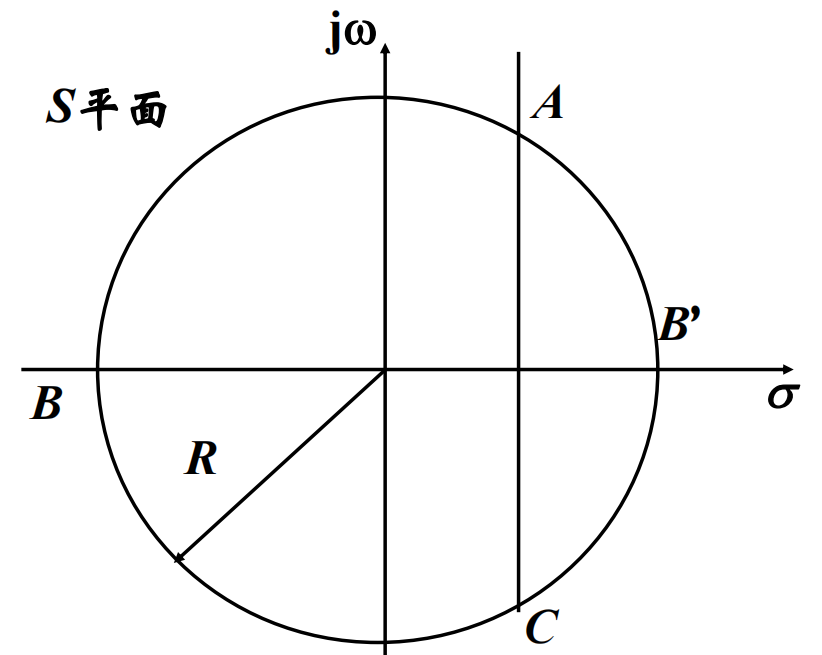
- 图中, AC 表示直线 σ=σ0, 收敛域在直线AC的右侧.
- 由留数定理, ∮CABCF(s)estds=2πj∑Resi.
- 考虑等式左侧的环路积分: ∮CABCF(s)estds=∫σ−j∞σ+∞F(s)estds+∫ABCF(s)estds.
- 由Jordan辅助定理: 对于满足 ∣s∣→∞lim∣F(s)∣=0 的左边信号, ∫ABCF(s)estds=0. (若是右边信号, 则是 ∫AB′C⋯=0 )
- 根据ILT的定义, ∫σ−j∞σ+∞F(s)estds=2πjf(t).
- 可以得到ILT的计算方法: f(t)=∑Resiε(t).
- 其中, 留数的求解范围是收敛域以外的整个空间. 留数的求解方法如下:
- 对一阶极点, Resk=(s−sk)F(s)est∣s=sk.
- 对 m 阶极点, Resk=(m−1)!1s→sklim[(s−sk)mF(s)est](m−1).
极零图
- 绘图方法: 在复平面中, 用 × 表示 F(s) 的极点, 用 ∘ 表示 F(s) 的零点.
- 性质:
- 极零图可决定波形的形状, 但无法决定幅度.
- 极点不可出现于收敛区间内.
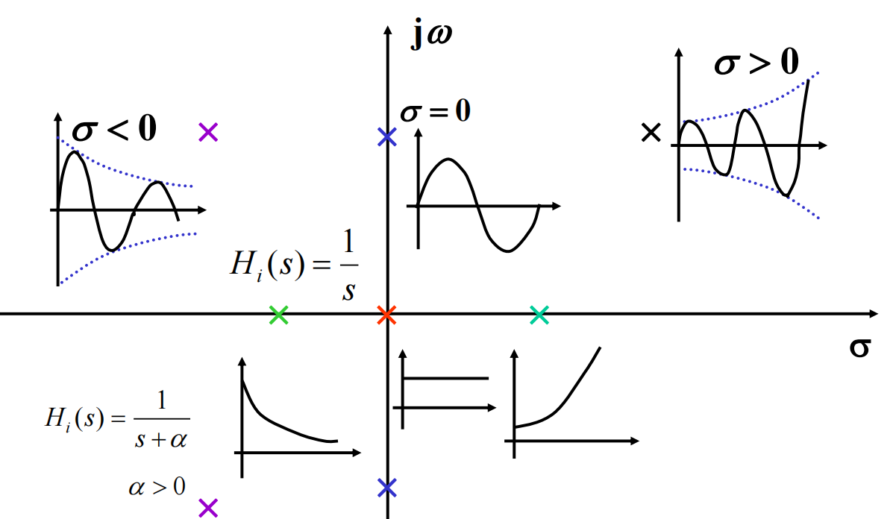
VI. 线性系统的Laplace变换分析
- 通过Laplace变换, 可以分别求得零状态与零输入响应.
- 零输入响应: 令 e(t)=0, 等式两侧做LT.
- 零状态响应: 直接对等式两侧做LT, 并带入初始状态为0.
- 亦可直接对等式两侧做LT并带入初始条件, 得到的即为全响应.
- 过程中移项得到的 H(s)=E(s)R(s), 称为转移函数.
VII. 双边Laplace变换
- 对于双边信号, 通常将其分解为两个单边信号求解.
- 右边信号: 与单边LT完全相同.
- 左边信号: 设左边信号为 fb(t), 有: Fb(−s)=∫0+∞fb(−t)e−stdt.
- 最终结果: 左边LT + 右边LT, 收敛域取两者交集.
- 求解左边信号LT的步骤:
- 将 fb(t) 反褶得到右边信号 fb(−t).
- 求右边信号的LT与收敛域 Fb(−s).
- 对所得结果的 s 取相反数, 得到最终结果.
- 对于左边信号的ILT, 有如下步骤:
- 对于时域表达式整体添加负号.
- 对阶跃函数的变量添加负号.
- 例如, 若对于右边信号有 FR(s)↔f(t)ε(t), 则对左边信号有 FL(s)↔−f(t)ε(−t).
双边Laplace反变换
此处注重介绍部分分式展开法.
- 将 F(s) 分为左边与右边两部分: F(s)=Fr(s)+Fl(s).
- 对两部分分别进行部分分式展开. 但左边信号与右边信号的ILT结果不同.
- 划分的依据:
- 左边信号: 极点位于收敛区右侧.
- 右边信号: 极点位于收敛区左侧.
- 例如, 若 F(s)=s−41+s−61(4<Re[s]<6), 则 s−41 是右边信号, s−61 是左边信号.
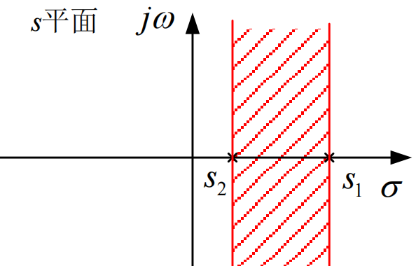
线性系统对双边信号的响应
求解步骤如下:
- 求双边激励信号 e(t) 的双边LT E(s).
- 求系统的转移函数 H(s).
- 计算收敛区间.
- 若收敛区间存在公共区域, 则 R(s)=E(s)H(s).
- 若收敛区间不存在公共区域, 则响应的LT不存在, 采用近代时域法求解: r(t)=e(t)∗h(t).
- 对 R(s) 求双边ILT, 得到响应 r(t).
VIII. 线性系统的模拟
通过模拟框图实现对线性系统的模拟.
- 基本运算单元: 加法器, 标量乘法器, 积分器.
- 其中, 时域与频域的积分器表示方法不同.

- 一阶微分方程模拟框图:
- 将最高阶项单独移到一侧, 可得 y′(t)=x(t)−a0y(t). 由此可画出框图.
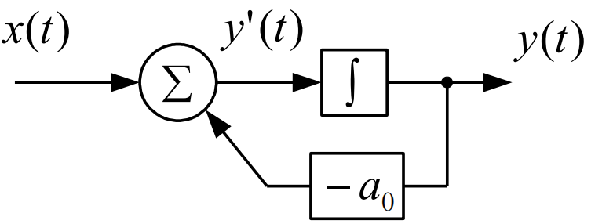
- 一般微分方程模拟框图: 形如 ∑aiy(i)(t)=∑bix(i)(t) 系统的框图.
- 引入中间变量 q(t), 使得 y(t)=∑biq(i)(t), ∑aiq(i)(t)=x(t).
- 对于 n 阶系统, 需要 n 个积分器.
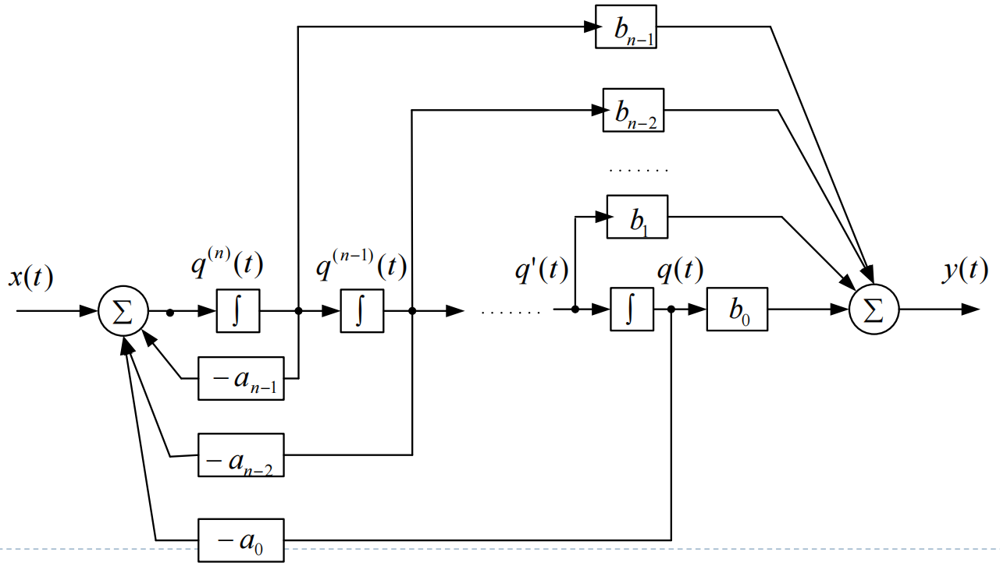
- 一个系统的框图不唯一. 可以画为直接型, 并联型, 串联型. 其中, 后两者均是针对复频域而言.
- 直接型: 一般微分方程的画法.
- 串联型: H(s)=∏i=1NHi(s).
- 并联型: H(s)=∑i=1NHi(s).
- 由框图求转移函数:
- 写出积分器前后各节点的形式, 由加法器求解.
- 对于复杂系统, 可以设某一结点处的方程为 G(s), 随后求解 G(s) 与 X(s),Y(s) 的关系.
- 注: 框图法中不存在"微分器", 故无法求解转移函数为假分式的系统.
通常对信号流图的使用较少, 此处略.
IX. 系统函数极零图分析
- 系统函数 H(s)=D(s)N(s) 的极零点个数:
- 分子 N(s) 为 m 次多项式, 则有 m 个零点.
- 分母 D(s) 为 n 次多项式, 则有 n 个极点.
- 若考虑无穷远处的极零点, 则极点与零点的个数总是相同的. 有 ∣m−n∣ 个零/极点位于无穷远处.
- 对称性: 极零点的分布关于实轴对称. 因为极零点总是实数或共轭复数.
- 与响应的关系:
- 极点: 系统的特征根. 决定系统的自然响应与零输入响应频率.
极零图与频率特性关系
- 系统函数可写作 H(s)=H0∏(s−pi)∏(s−zi).
- 称 s−zi=bi=Biejβi 为零点矢量.
- 称 s−pi=ai=Aiejαi 为极点矢量.
- 系统函数可改写为: H(s)=H0∏Ai∏Biej(∑βi−∑αi)=∣H(jω)∣ejφ(ω).
- 幅频响应: ∣H(jω)∣=H0∏Ai∏Bi.
- 相频响应: φ(ω)=∑βi−∑αi.
- 幅频特性的性质:
- jω 靠近极点时, Ai 减小, 产生峰.
- jω 靠近零点时, Bi 减小, 产生谷.
- 越靠近虚轴, 峰/谷就越尖锐.
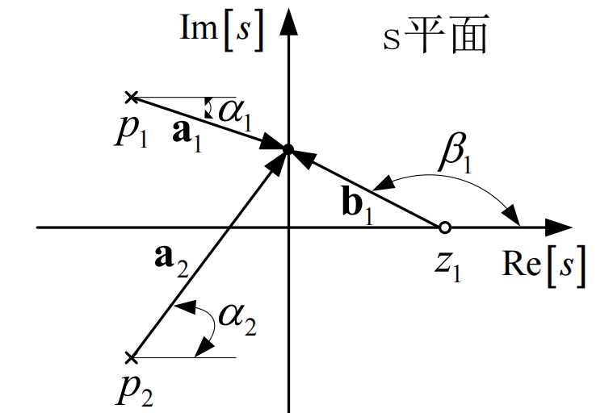
重要的系统函数
- 全通系统.
- 极点与零点关于虚轴对称分布.
- ∣H(jω)∣=H0, 幅频特性为一条直线.
- 不同频率的相位可能不同, 可用来调整相位.
- 最小相移系统.
- 极零点全部位于虚轴的左侧.
- 对于 ω>0 部分虚轴上的点, 该系统对极零点的相移总是最小的.
- 由极零图的对称性, 一个非最小相移系统总能由 最小相移系统+全通系统 得到.
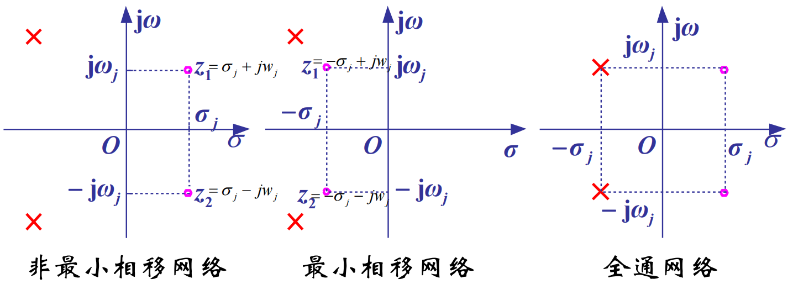
X. 系统函数的波特图
- 对系统函数 H(jω)=∣H(jω)∣ejφ(ω) 两侧取对数, 得 lnH(jω)=ln∣H(jω)∣+jφ(ω)=G(ω)+jφ(ω).
- 取 G(jω)=20lg∣H(jω)∣, 称为对数增益, 单位为 dB.
- 在虚轴上, 有 H(jω)=H0∏(jω−pi)∏(jω−zi).
- 取对数可得: G(ω)=20lg∣H0∣+∑Gzi(ω)−∑Gpi(ω). 其中 Gi(ω) 均为一次因式.
- 一次因式的波特图. H(jω)=jω−zi
- 令 −zi=Ti1, 有 H(jω)=Ti1(1+jωTi).
- G(ω)=20lg∣H(jω)∣=20lgTi1+20lg1+(ωTi)2.
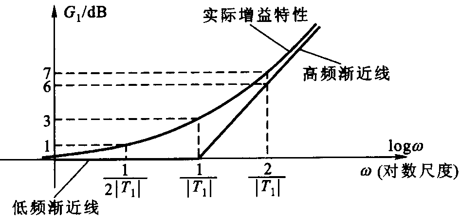
XI. 系统的稳定性
- 稳定性系统(BIBO): 有限激励能产生有限响应.
- 即: ∣e(t)∣<Me⇒∣r(t)∣<Mr.
- 要求: 冲激响应绝对可积.(时域判定) 由于系统的冲激响应与极点分布高度相关. 有如下关系:
- 极点位于虚轴左侧: 此时冲激响应对应的对数特征函数是衰减的, 绝对可积条件满足. 系统是稳定的.
- 极点位于虚轴右侧: 同理, 对数特征函数是不收敛的, 系统是不稳定的.
- 极点位于虚轴上: 若虚轴上有一阶极点, 称为临界稳定. 临界稳定也是一种不稳定状态.
- 由此可得稳定性的频域判定: 对 H(s)=D(s)N(s), 分母(特征方程) D(s) 无正零点.
Routh-Hurwitz(罗斯-霍维茨)判据
步骤如下:
- 将特征方程的系数按照奇偶排成两行, 不可跳过0系数.
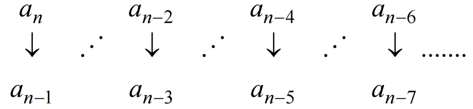
- 依据这两行, 根据迭代公式构造出数值表(Routh-Hurwitz阵列).
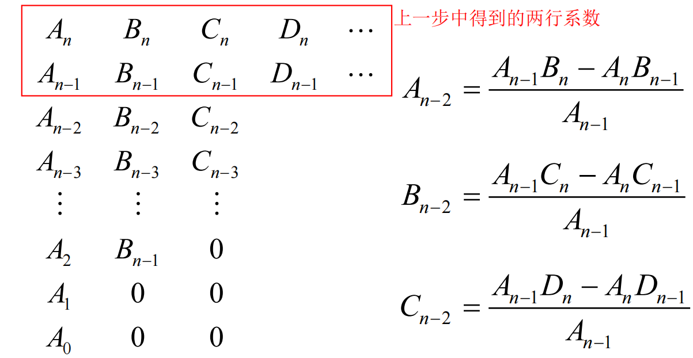
- 取第一列 Ak. 每一次符号跳变对应一个正数解.
- 即 D(s) 无正零点的条件为: {An} 同号且不为0.
- 特殊的情况1: Ak=0. 此时, 用小正数 ε 代替0.
- 特殊的情况2: Ak, Bk 出现全零行. 此时, 引入辅助多项式. 即由 Ak−1, Bk−1,… 为系数组成的多项式. 对其求导, 得到的系数即为新一行的系数.
XII. 线性反馈系统
- 反馈系统的组成:
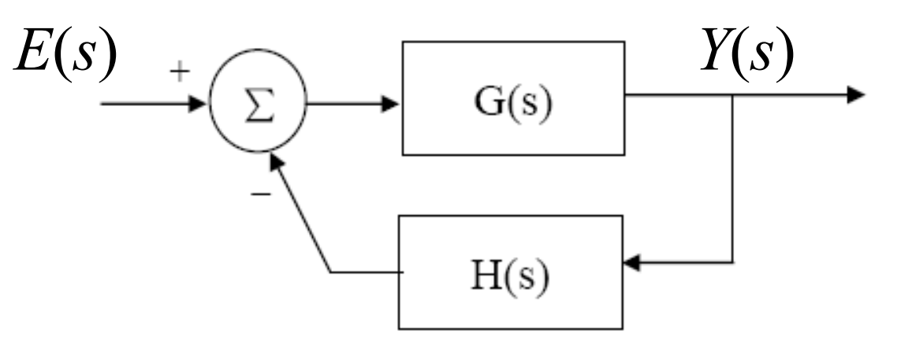
- 前向路径: G(s).
- 反馈路径: H(s).
- 系统方程: 由 Y(s)=G(s)[E(s)−Y(s)H(s)] 可得: Y(s)=1+G(s)H(s)E(s)G(s).
- 判断稳定性: 求整个系统的系统函数 I(s)=E(s)Y(s)=1+G(s)H(s)G(s), 对其利用 Routh-Hurwitz判据.